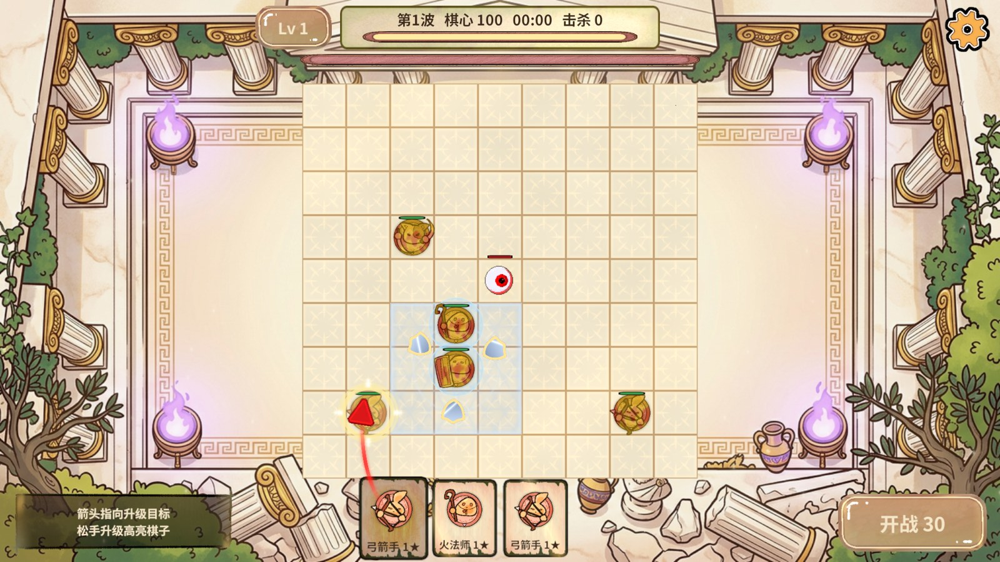

红色箭头沿用已有图集与网格，合法目标alpha=1，浅色棋盘上清晰可见。快捷启动器首次配置Unity安装路径，JSON持久化，以后双击即可打开相邻RevGame工程。
实际rev_discover→rev_call→rev_run：正式大厅进入隔离无尽局，EventSystem拖曳；箭头红色r=1、alpha=1、卡槽位置保持，松手playsDelta=1、handDelta=1。finally释放手势并返回Home，资源制作/编译通过。

启动器使用说明。入口RevGame_Client/Start_Unity/Start_Unity.cmd，支持Unity安装目录、Editor目录、Unity.exe完整路径，JSON仅保存本机引擎位置，工程根据脚本目录推导。
检查未关闭当前用户编辑器，实际启动验证使用已有工程复用分支。未在另一台机器执行首次交互输入；脚本使用Windows内置PowerShell。
音频AB从27.49MB降到17.34MB，减少36.94%。统一导入设置、构建后容量门禁与PC/Android产物一并交付。详情见音频报告。